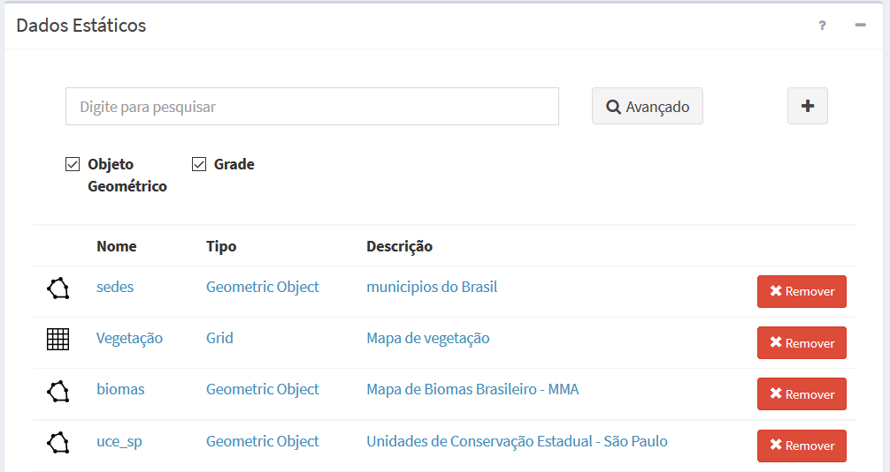

Dados Estáticos
Um dado estático deve estar associado a um servidor de dados. Este servidor pode fornecer um ou mais conjuntos de dados estáticos. Conforme apresentado no item Dados e Formatos os dados estáticos podem ser vetoriais (geometrias de pontos, linhas ou polígonos com atributos associados) ou matriciais (grades retangulares). Dessa maneira, as principais características de um dado estático são:
- Um dado estático é identificado por um nome único;
- Um usuário pode definir vários dados estáticos em um projeto;
- Dados estáticos são utilizados por um ou mais modelos de análise;
- Um dado estático será identificado por um ícone. Para Vetoriais ( ) e para Matriciais ( ).
- O dado estático vetorial pode ser definido como arquivos tradicionais como shapefile, na forma de tabelas ou visões em um banco de dados PostgreSQL + PostGIS.
- O dado estático matricial pode ser definido na forma de arquivos tradicionais como GeoTiff.
A Figura 2.24 mostra a área de trabalho do menu “ Dados Estáticos” com a lista de alguns dados disponíveis. Caso a lista seja muito extensa poderá digitar um nome na caixa de texto “Digite para pesquisar” para encontrar um dado estático específico. Nesta área é possível selecionar um dado estático para edição, criar um dado ou ainda remover um dado existente. Veja a seguir detalhes de cada tipo de dado estático e as opções de manipulação correspondentes.
Dados Estáticos” com a lista de alguns dados disponíveis. Caso a lista seja muito extensa poderá digitar um nome na caixa de texto “Digite para pesquisar” para encontrar um dado estático específico. Nesta área é possível selecionar um dado estático para edição, criar um dado ou ainda remover um dado existente. Veja a seguir detalhes de cada tipo de dado estático e as opções de manipulação correspondentes.

Figura 2.24 – Módulo de Administração: Lista de dados estáticos disponíveis na área de trabalho.
DADOS ESTÁTICOS VETORIAIS
Os dados estáticos do tipo vetorial podem ser oriundos de diversas fontes como apresentado no item Dados e Formatos. Para facilitar o seu uso foi incluído a leitura desses dados nos seguintes formatos:
- Arquivos Vetoriais (ESRI Shape-File): arquivos que devem estar associados a um servidor de dados do tipo “Arquivo”. Lembre-se que um mapa vetorial neste formato é constituído de um conjunto de arquivos com mesmo prefixo, isto é, devem estar disponíveis no mínimo os arquivos <mapa>.shp, <mapa>.dbf, <mapa>.shx e <mapa>.prj.
- Tabelas com Feições (PostgreSQL / PostGIS): tabelas espaciais que devem estar associados a um servidor de dados do tipo “PostGIS”. Para criar a tabela utilize o aplicativo SIG de sua preferência (no TerraView versão 5.x veja a opção “Intercâmbio de Camadas”). Há também a possibilidade ainda de transferir um arquivo “Shape-File” compactado com extensão *.zip para criar a tabela.
- Visões de Tabelas (PostgreSQL / PostGIS): uma visão é considerada uma pseudo-tabela, ou seja, ela é definida por expressões em SQL (SELECT/FROM/WHERE) para apresentar subconjuntos de dados presentes em uma ou mais tabelas reais. A visão pode ser definida externamente a plataforma e posteriormente ser selecionada para uso ou ser criada a partir de uma única tabela com os recursos da interface utilizando filtros sobre os atributos.
IMPORTANTE: Para utilizar dados estáticos vetoriais em análises baseadas em objetos monitorados ou processamentos vetoriais, tais dados devem estar disponíveis na forma de tabelas no PostGIS. Dados estáticos vetoriais no formato de arquivos como Shape-File ou visões de tabelas somente poderão ser utilizados para visualização de camadas a serem publicadas no “Módulo de Monitoramento”.
Arquivos Shape-File poderão ser carregados ou transferidos a partir de qualquer computador conectado à internet que tenha acesso ao “Módulo de Administração”. Veja opção de transferir (fazer “upload”) arquivos em “ADICIONANDO DADO ESTÁTICO”.
DADOS ESTÁTICOS MATRICIAIS
Os dados estáticos do tipo matriciais podem ser oriundos de diversas fontes como apresentado no item Dados e Formatos. Para facilitar o seu uso foi incluído a leitura desses dados nos seguintes formatos:
- Arquivos GeoTiff: mapas matriciais estáticos que serão publicados no aplicativo web “Módulo de Monitoramento” ou como camadas em análises para cruzar com objetos monitorados ou com outros dados matriciais dinâmicos, devem estar associados a um servidor de dados do tipo “Arquivo”.
Arquivos Geotiff de qualquer computador poderão ser carregados ou transferidos pela internet, desde que tenha acesso ao “Módulo de Administração”. Veja opção de transferir (fazer “upload”) arquivos em “ADICIONANDO DADO ESTÁTICO”.
ADICIONANDO DADO ESTÁTICO:
Para adicionar um novo dado estático é necessário ter um projeto ativo. No menu de opções selecione “ Dados Estáticos” para que a lista de dados disponíveis seja apresentada na área de trabalho. Clique no botão “ + ” para adicionar novo dado. Utilize o botão “Salvar” para salvar o dado estático. Não é permitido nomes de dados em duplicidade. Botão “Cancelar” volta à tela anterior sem salvar o dado. Detalhes de como adicionar dado estático veja aqui.
CONSULTANDO E ALTERANDO UM DADO ESTÁTICO:
Para consultar e alterar as configurações de um dado estático clique em “ Dados Estáticos” no menu de opções e na área de trabalho clique sobre o nome ou tipo de um item disponível. Após editar os campos desejados utilize o botão “Salvar” para salvar as alterações. Botão “Cancelar” volta à tela anterior sem salvar alterações.
ATIVANDO OU DESATIVANDO UM DADO ESTÁTICO:
Para ativar ou desativar um dado estático clique em “ Dados Estáticos” no menu de opções e na área de trabalho clique sobre o botão (ativado) ou
Dados Estáticos” no menu de opções e na área de trabalho clique sobre o botão (ativado) ou  (desativado) no item correspondente. Dados estáticos deixam de ser utilizados na posição desativado. Ao selecionar um dado estático, na aba “Geral” o botão
(desativado) no item correspondente. Dados estáticos deixam de ser utilizados na posição desativado. Ao selecionar um dado estático, na aba “Geral” o botão  tem o mesmo efeito dos botões acima apresentados na lista de dados estáticos.
tem o mesmo efeito dos botões acima apresentados na lista de dados estáticos.
FILTRANDO ITENS NA LISTA DE DADOS ESTÁTICOS:
Para filtrar itens na lista de dados estáticos clique em “ Dados Estáticos” no menu de opções. Na área de trabalho no campo texto “Digite para pesquisar” digite o texto desejado. Note que todas as colunas disponíveis são utilizadas no filtro. Utilize o botão “
Dados Estáticos” no menu de opções. Na área de trabalho no campo texto “Digite para pesquisar” digite o texto desejado. Note que todas as colunas disponíveis são utilizadas no filtro. Utilize o botão “ Avançado” para apresentar os botões referentes aos tipos de dados estáticos e escolher os que deverão fazer parte da lista. Por padrão todos os tipos estarão selecionados. O filtro digitado e os botões de escolha do tipo de dados estáticos são combinados para apresentar os itens da lista.
Avançado” para apresentar os botões referentes aos tipos de dados estáticos e escolher os que deverão fazer parte da lista. Por padrão todos os tipos estarão selecionados. O filtro digitado e os botões de escolha do tipo de dados estáticos são combinados para apresentar os itens da lista.
REMOVENDO UM DADO ESTÁTICO:
Para remover um dado estático de um projeto ativo clique no menu “ Dados Estáticos” para apresentar a lista de dados na área de trabalho. Na frente do nome do dado clique em “Remover”. Confirme a remoção na mensagem com “OK”.
Dados Estáticos” para apresentar a lista de dados na área de trabalho. Na frente do nome do dado clique em “Remover”. Confirme a remoção na mensagem com “OK”.
Importante: Um dado estático somente poderá ser removido se não houver nenhuma análise associada. Caso o dado estático tenha apenas visualizações associadas estas serão removidas juntas com o dado estático.